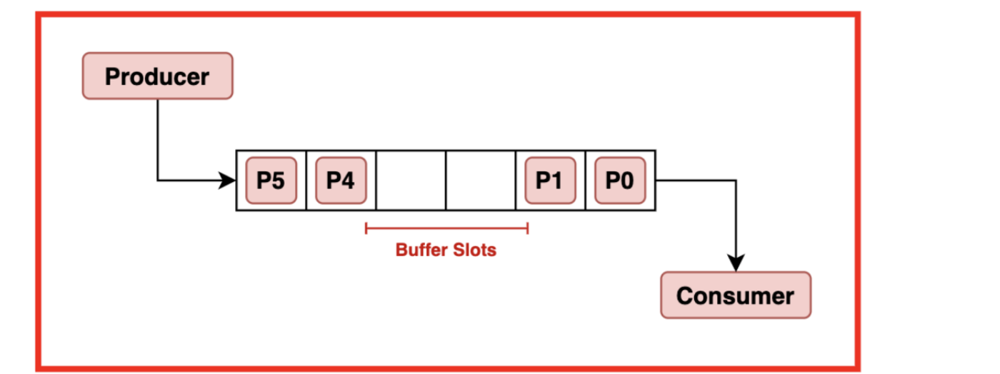
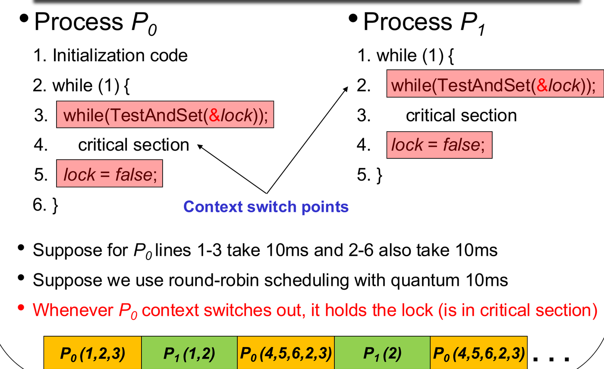
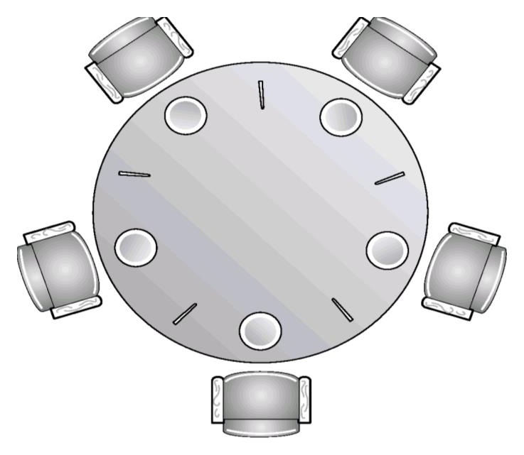

When concurrent processes share memory or files, the order in which individual machine instructions interleave depends on operating system scheduling decisions and hardware interrupts. If multiple processes modify shared data simultaneously, uncoordinated execution can corrupt data structures.
This chapter examines the critical-section problem,
the formal criteria for correct synchronization protocols, hardware
primitives (TestAndSet), and operating system mechanisms
(semaphores and monitors), alongside
classic concurrency problems.
1. The Concurrency Problem: Race Conditions
Motivating Example: Shared Bounded Buffer
Consider a producer process inserting items into a shared buffer while a consumer process removes them:

// Shared variables
int counter = 0;
// Producer // Consumer
while (1) { while (1) {
while (counter == BUFFER_SIZE); while (counter == 0);
buffer[in] = nextProduced; nextConsumed = buffer[out];
in = (in + 1) % BUFFER_SIZE; out = (out + 1) % BUFFER_SIZE;
counter++; counter--;
} }Although counter++ and counter-- appear
atomic in high-level C, each compiles into three distinct machine-level
instructions:
If an unexpected context switch occurs during this read-modify-write sequence:
- Initially,
counter = 5. - Producer executes and ().
- Context switch to Consumer.
- Consumer executes and ().
- Consumer executes
(
counterbecomes 4). - Context switch back to Producer.
- Producer executes
(
counteroverwrites to 6).
[!IMPORTANT] Race Condition Definition: A race condition occurs when multiple processes access and manipulate the same shared data concurrently, and the outcome of execution depends on the exact sequence or timing of instruction execution. Preventing race conditions requires mutual exclusion—ensuring that only one process can access shared data at any time.
AY Past-Paper Checks: Race Conditions
- AY18/19 S2 Q2a(i): Race conditions happen because of context switches. True. Race conditions occur because context switches interleave execution inside non-atomic read-modify-write sequences.
- AY19/20 S1 Q2a(i): To prevent race conditions, it is sufficient to ensure that each read or write to any shared variable is atomic. False. Even if individual reads and writes are atomic, a race condition occurs whenever a context switch interleaves between the read and the write. The entire read-modify-write sequence must execute under mutual exclusion.
2. The Critical-Section Problem
A critical section is a segment of code in which a process accesses shared resources (memory, files, tables). The fundamental requirement is: when one process is executing in its critical section, no other process may be allowed to execute in its own critical section.
General code structure:
do {
entry section // Request permission to enter
critical section // Manipulate shared variables
exit section // Notify completion
remainder section // Unshared computations
} while (true);The Three Mandatory Requirements
A valid solution to the critical-section problem must satisfy all three criteria:
- Mutual Exclusion: If process is executing in its critical section, no other processes can be executing in their critical sections.
- Progress: If no process is executing in its critical section and some processes wish to enter, only those processes not executing in their remainder sections can participate in deciding who enters next, and this selection cannot be postponed indefinitely. (Prevents deadlocks).
- Bounded Waiting: There must exist a bound on the number of times other processes are allowed to enter their critical sections after a process has made a request to enter and before that request is granted. (Prevents starvation).
[!NOTE] Progress Bounded Waiting: A protocol can satisfy Progress (the system never deadlocks, and some process always enters) while violating Bounded Waiting (the same aggressive process enters repeatedly while a starving process waits indefinitely).
3. Software Solutions for Two Processes
Flawed Naive Protocols
Attempt 1: Strict
Alternation (turn only)
// Process i
while (turn != i); // Entry section
critical section
turn = j; // Exit section- Mutual Exclusion: Satisfied.
- Progress: Violated. If exits and enters a long remainder section while wants to re-enter, is blocked waiting for , even though the critical section is completely empty.
Attempt 2: Ready Flags
(flag only)
// Process i
flag[i] = true; // State interest
while (flag[j]); // Wait for other
critical section
flag[i] = false;- Mutual Exclusion: Satisfied.
- Progress: Violated (Deadlock). If
both processes set
flag[0] = trueandflag[1] = truesimultaneously before either evaluates the while-loop, both processes spin forever waiting for the other.
Peterson’s Algorithm (Correct Two-Process Solution)
Peterson’s algorithm combines shared flags with a shared turn variable:
boolean flag[2]; // Initially false
int turn;
// Process i (where j is the other process: j = 1 - i)
do {
flag[i] = true; // "I want to enter"
turn = j; // "You can go first" (politeness rule)
while (flag[j] && turn == j); // Wait if other wants in AND it's their turn
critical section
flag[i] = false; // Exit section
remainder section
} while (true);Correctness Proof
- Mutual Exclusion: For both to be in the critical
section,
flag[0] == trueandflag[1] == true. Butturncan only hold one value (either 0 or 1). Whichever process overwroteturnlast is forced to wait in the while-loop. - Progress: If
is not in its critical section, then
flag[j] == false, so enters immediately without waiting. If both wish to enter,turnbreaks the tie deterministically. - Bounded Waiting: Once
exits, it resets
flag[j] = false, allowing to enter. If immediately tries to re-enter, it setsturn = i, guaranteeing that enters after at most one entry by .
Tutorial 4 Q1 & Q2: Critical Section Criteria and Flawed Protocols
- Tutorial 4 Q1 (Progress vs. Bounded Waiting):
- Progress ensures the system never deadlocks—if the critical section is open, some waiting process will enter.
- Bounded Waiting ensures fairness—no individual process starves indefinitely while others repeatedly bypass it.
- Tutorial 4 Q2 (Evaluating Algorithm 1 & 2):
- Algorithm 1 (
turnonly): Enforces strict alternation. Violates Progress because a process lingering in its remainder section blocks the other from entering. - Algorithm 2 (
flagonly): If both processes assert their flags simultaneously, both enter busy-wait loops, violating Progress (deadlock).
- Algorithm 1 (
Tutorial 4 Q3: Peterson’s Algorithm Verification
Question: Prove that Peterson’s algorithm satisfies: (a) Mutual Exclusion, (b) Progress, (c) Bounded Waiting.
Proof:
- (a) Mutual Exclusion: A process enters only if
flag[j] == falseorturn == i. If both attempt to enter simultaneously, both set their flags to true. However,turnis a scalar variable that must be either 0 or 1. If setsturn = 1first and setsturn = 0second, the final value ofturnis 0. Then findsturn == 0and enters, while loops becauseflag[0] == trueandturn == 0. - (b) Progress: If
has no interest in entering (
flag[1] == false), ’s while-condition is immediately false, granting entry. If both compete, the value ofturnimmediately admits one process without delay. - (c) Bounded Waiting: When
leaves, it sets
flag[0] = false. If attempts to re-enter, it must executeturn = 1, yielding the next entry to . Hence, waits at most one critical section entry.
4. Hardware Synchronization Primitives
Modern processors provide hardware instructions that execute atomically (uninterruptibly as a single bus cycle).
The TestAndSet
Instruction
Definition of atomic semantics:
boolean TestAndSet(boolean *target) {
boolean rv = *target; // Read old value
*target = true; // Set target to true
return rv; // Return old value
}Simple Spinlock (Mutual Exclusion & Progress, NO Bounded Waiting)
boolean lock = false;
// Process executes:
while (TestAndSet(&lock)); // Spin while lock is held
critical section
lock = false; // Release lock- Pros: Simple, hardware-enforced.
- Cons: Busy waiting (spinlock) wastes CPU cycles. More importantly, it violates Bounded Waiting—an arbitrary process can repeatedly win the lock, starving others.
Bounded-Waiting
TestAndSet Algorithm
To guarantee bounded waiting, processes share an array
waiting[n] and pass the lock cyclically:

boolean waiting[n]; // Initially false
boolean lock; // Initially false
// Process i entry section
waiting[i] = true;
key = true;
while (waiting[i] && key)
key = TestAndSet(&lock);
waiting[i] = false;
critical section
// Process i exit section (scan cyclically for next waiting process)
j = (i + 1) % n;
while ((j != i) && !waiting[j])
j = (j + 1) % n;
if (j == i)
lock = false; // No one waiting; release lock
else
waiting[j] = false; // Directly hand lock to process j- Correctness: Scanning cyclically from guarantees that any waiting process enters the critical section within at most turns, strictly satisfying Bounded Waiting.
5. Operating System Semaphores
A semaphore
is a synchronization variable accessed exclusively through two standard
atomic operations: Wait() (historically
)
and Signal() (historically
).
Blocking Semaphore Implementation (No Busy Waiting)
To avoid CPU waste from spinlocks, operating systems implement semaphores using process blocking queues:
typedef struct {
int value;
struct process *list; // Waiting queue
} semaphore;
void Wait(semaphore *S) {
S->value--;
if (S->value < 0) {
add this process to S->list;
block(); // Move to Waiting state
}
}
void Signal(semaphore *S) {
S->value++;
if (S->value <= 0) {
remove a process P from S->list;
wakeup(P); // Move to Ready state
}
}[!IMPORTANT] Fundamental Semaphore Mathematical Properties: For a blocking semaphore initialized to value :
- If : indicates the number of available resources (processes can execute
Wait()without blocking).- If : Exactly (or ) processes are currently blocked in the semaphore’s waiting queue!
Step-by-Step Method: Tracking Semaphore Values & Blocked Queues
When evaluating an arbitrary sequence of
Wait() calls and
Signal() calls on semaphore initialized to
:
- Calculate current integer value: .
- Interpret the state:
- If : units of resource remain free. Blocked count .
- If : Zero resources remain free, but zero processes are blocked.
- If : Zero resources remain free, and exactly processes are blocked in the queue.
Tutorial 5 Q1 & Q2: Semaphore Mechanics and Modified Specifications
- Tutorial 5 Q1 (Semaphore Invariants):
- Question: Can a semaphore take negative values? What does a negative value indicate?
- Answer: Yes, in blocking implementations, a negative value means the resource is exhausted and exactly processes are currently sleeping in the semaphore queue.
- Tutorial 5 Q2 (Modified Semaphore Analysis):
- Question: In
Wait(), why mustS->value--occur before checkingS->value < 0? - Answer: If the check occurred before decrementing, multiple concurrent processes could check a non-negative value simultaneously, bypass the block condition, and enter the critical section together, violating Mutual Exclusion.
- Question: In
6. Classic Synchronization Problems
1. The Bounded-Buffer (Producer–Consumer) Problem
Uses three coordinated semaphores:
semaphore mutex = 1;(Binary semaphore enforcing mutual exclusion on buffer manipulation)semaphore empty = N;(Counting semaphore tracking unallocated buffer slots)semaphore full = 0;(Counting semaphore tracking available filled items)
// Producer Process // Consumer Process
do { do {
// Produce next item Wait(full); // Wait for filled slot
Wait(empty); // Wait for empty slot Wait(mutex); // Lock buffer
Wait(mutex); // Lock buffer // Remove item from buffer
// Insert item into buffer Signal(mutex);
Signal(mutex); Signal(empty);
Signal(full); // Consume item
} while (true); } while (true);[!CAUTION] The Semaphore Ordering Rule: Always acquire the resource semaphore (
Wait(empty)orWait(full)) before acquiring the critical section lock (Wait(mutex)). Reversing this order:Wait(mutex); Wait(empty);Causes a catastrophic deadlock if the buffer is full: the producer locks
mutex, blocks onempty, and the consumer can never access the buffer to callSignal(empty)because it is blocked onmutex!
2. The Readers–Writers Problem
Multiple concurrent readers may read shared data simultaneously, but a writer must have exclusive access.
First Readers–Writers Solution (Reader Preference):
semaphore rw_mutex = 1; // Controls exclusive write access
semaphore mutex = 1; // Protects read_count
int read_count = 0;
// Writer Process // Reader Process
do { do {
Wait(rw_mutex); Wait(mutex);
// Writing performed read_count++;
Signal(rw_mutex); if (read_count == 1)
} while (true); Wait(rw_mutex); // First reader locks writer out
Signal(mutex);
// Reading performed
Wait(mutex);
read_count--;
if (read_count == 0)
Signal(rw_mutex); // Last reader releases writer
Signal(mutex);
} while (true);- Starvation Risk: Writers can starve indefinitely if
new readers continuously arrive before
read_countdrops to zero.
3. The Dining Philosophers Problem
Five philosophers sit around a circular table with five single chopsticks:

Each philosopher requires both adjacent chopsticks to eat.
- Naive solution: Each philosopher grabs their left chopstick, then their right chopstick.
- Deadlock Trap: If all five philosophers sit down simultaneously and grab their left chopstick, all five chopsticks are held. Every philosopher blocks indefinitely waiting for their right chopstick.
Three Deadlock-Free Solutions:
- Capacity Limit: Allow at most 4 philosophers to sit at the table simultaneously (guarantees at least one philosopher gets both chopsticks).
- Asymmetric Ordering: Odd-numbered philosophers pick up Left then Right; even-numbered philosophers pick up Right then Left.
- Atomic Acquisition: Pick up both chopsticks simultaneously inside an exclusive critical section.
7. Monitors
A monitor is a high-level programming language
synchronization construct. The compiler automatically enforces that
only one thread can be active inside a monitor at any given
time, eliminating manual Wait/Signal
pairing errors.
Programmers manage conditional synchronization using Condition Variables:
x.wait(): Suspends the calling process until another process callsx.signal().x.signal(): Resumes exactly one process suspended onx.
Signal Semantics:
- Signal-and-Wait (Hoare style): The signaling process yields the monitor immediately to the awakened process.
- Signal-and-Continue (Mesa style): The signaling process continues executing inside the monitor; the awakened process waits until the monitor becomes idle.
Tutorial 5 Q3 & Q4: Bounded-Buffer & Readers-Writers Analysis
- Tutorial 5 Q3 (Order of Signals):
- Question: In the bounded-buffer producer, does the order of
Signal(mutex)andSignal(full)matter? - Answer: No. Unlike
Wait(),Signal()never blocks. Swapping the signals alters only which queue is updated first; it cannot cause deadlock.
- Question: In the bounded-buffer producer, does the order of
- Tutorial 5 Q4 (Readers-Writers Mutex Role):
- Question: What is the purpose of
mutexin the reader process? - Answer:
mutexprovides mutual exclusion for updating the shared integerread_count. Without it, concurrent readers executingread_count++would create a race condition.
- Question: What is the purpose of
AY Past-Paper Checks: Semaphores & Concurrency
- AY16/17 S1 Q1a(iv): A counting semaphore
initialized to 10 has 15 Wait and 12 Signal calls. How many processes
are blocked?
- Since , 0 processes are blocked (and 7 resource units remain).
- AY17/18 S2 Q2b: A semaphore initialized to 2
has 6 Wait calls and 2 Signal calls. Final value and blocked count?
- Final value is ; exactly 2 processes are blocked.
- AY18/19 S1 Q2b: In the dining philosophers
problem, why does asymmetric chopstick picking prevent deadlock?
- It eliminates the circular wait condition. An odd-numbered philosopher competes for the same first chopstick as their even neighbor, breaking the cycle of circular dependencies.